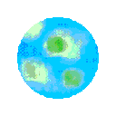

Planet database:
Go home?
CREBBO:0
Name: Olwyn
Description:
Olwyn is a Class M star at the centre of the Crebbo System. It has a surface temperature of approximately 2,400 Kelvin, a mass of about 0.16 solar masses, and is located approximately 18,000 parsecs (58,708.76 light-years) from Earth.CREBBO:I

Name: Elle World
Description:
Elle World is the closest planet to Olwyn and is the main home of Elodie. Elle World has a highly biodiverse and geodiverse surface and lengthy sunrises and sunsets. Some of the planets most notable characteristics are the thick pink clouds that make it impossible to see the planet surface from outer space; however, they don't obstruct the view of space from the surface, and a ring of pure 24 karat gold dust.CREBBO:I-A
Name: Månen
Description:
The first of Elle World's two moons, Månen is similar to Earth's moon and is home to the Blåhaj, a race of small, soft sharks that like to hug people and kill transphobes, and can fly through space to anywhere in the universe.CREBBO:I-B
Name: Jeb Byd
Description:
Elle World's second moon, Jeb Byd, is ruled by an ancient and powerful eccentric wizard named Jeb, who became immortal after making a bargain with a magic rat. Jeb refuses to allow visitors to their planet so that they can continue to plan their subjugation of the multiverse.CREBBO:II

Name: Archipelagia
Description:
This tropical planet is almost entirely covered in water, with a few small lush islands. Some of the islands have Cabanas on or near the beaches for visitors to stay in and a thriving ecosystem of friendly animals in the jungle areas of the islands where a variety of healthy fruits grow.CREBBO:II-A
Name: Deciduon
Description:
This moon's surface is entirely covered in dense forests and woodlands, home to a variety of woodland flora and fauna. The trees here grow unnaturally fast and dense, blocking out sunlight in the deeper parts of the woods.The woods are also home to several witches, who study the magical properties of the local plant life.
CREBBO:III
Name: Glacarium
Description:
Glacarium is completely frozen, covered in snow and ice, making the forests and mountains inhospitable to most life. However, the hot-springs in the mountains have exceptional healing properties, and as a result many medical research laboratories, and the Crebbo System's largest hospital, have been built here.Thank you for reading about my silly little planets!
This started out as an idea I got for one cute little planet, and it grew into lots of planets and moons that I wanted to write full descriptions of.My writing skills aren't very good, so I'm hoping to improve them and write better descriptions and add more planets soon.